| 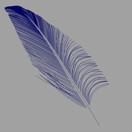 |
羽毛渲染为曲线
本教程将介绍如何使用已转化为曲线的 Paint Effects 笔刷渲染羽毛。
Maya 文件位于此处。
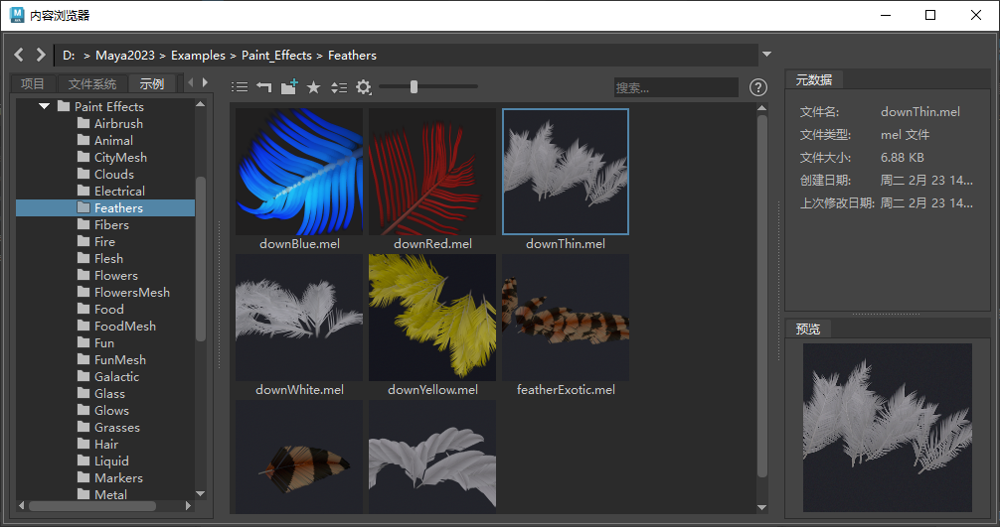
更快、更高效地渲染多个曲线的方式是使用曲线收集器。
Arnold 中有两种渲染曲线的算法，分别是“带状”(Ribbon)和“有厚度”(Thick)。对于主干，您需要使用“有厚度”(Thick)模式来渲染曲线。
| 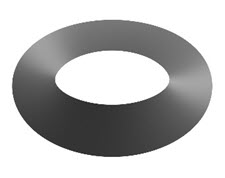 | 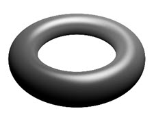 |
| 模式(Mode)：带状 | 模式(Mode)：有厚度 |
单个羽支使用带状模式渲染效果更好：
| 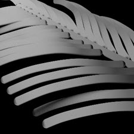 | 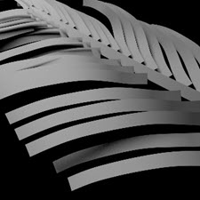 |
| 模式(Mode)：有厚度 | 模式(Mode)：_带状_（更适合渲染羽支）。 |
当“Ai 曲线宽度”(Ai Curve Width)设置得过高时，曲线会开始重叠，并且采样会出错。
| 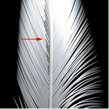 | 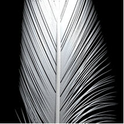 |
| _Ai 曲线宽度(Ai Curve Width)_：0.01。曲线重叠。 | 将_“Ai 曲线宽度”(Ai Curve Width)_减小到 0.005 可修复此问题 |
向 standard_hair 的“不透明度”(Opacity)添加渐变纹理贴图将会柔化曲线的边缘。
| 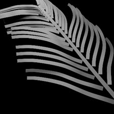 | 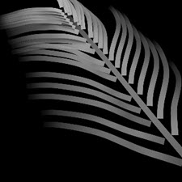 |
| 未使用不透明度 | 渐变纹理连接到 standard_hair.opacity 着色器 |
确保已将“Ai 不透明”(Ai Opaque)属性添加到集，并且禁用该选项，以便让不透明度正常工作。
增大 curve_width，使其至少为羽毛曲线宽度的两倍（本例中使用的值为 0.04）。确保将模式更改为“有厚度”(Thick)，使曲线显得圆润。羽毛的主干需要使用常规的光泽材质。将一个 standard_surface 着色器连接到主干曲线的曲线着色器。
| 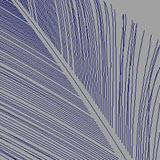 | |
| 以_“有厚度”(Thick)_模式渲染主干曲线 | 线框 |
创建一个 standard_hair 着色器，并将其连接到曲线集的“Ai 曲线着色器”(Ai Curve Shader)属性。
下面的图像显示了改变根颜色的效果。
| 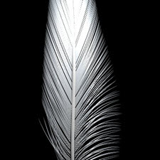 | 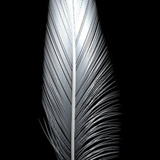 |
| _root_color_：白色 | _root_color_：黑色 |
下面的图像显示了向 standard_hair 着色器的 specular_tint 添加彩色圆形渐变产生的效果。
| 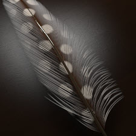 | 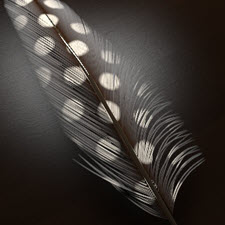 | |
| 渐变纹理连接到镜面反射颜色 | 渐变纹理连接到根颜色 | 渐变纹理连接到根和镜面反射颜色 |
SSS 仅适用于多边形网格，因此不受曲线基本体支持。
要在光泽反射和折射中看到曲线，需要添加以下覆盖属性：
| 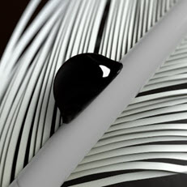 | 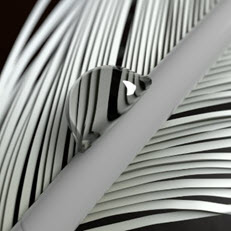 |
| Ai 在光泽中可见(Ai Visible in Glossy)/在折射中可见(Visible In Refractions)：禁用 | Ai 在光泽中可见(Ai Visible in Glossy)/在折射中可见(Visible In Refractions)：启用 |
默认情况下，曲线在反射中不可见。如果您想让曲线出现反射倒影，需要向包含曲线的覆盖集添加“在反射中可见”(Visible in Reflections)属性。
| 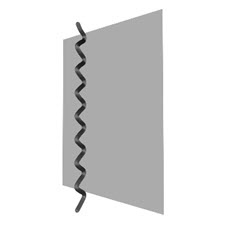 | 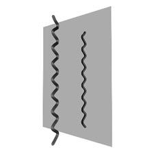 |
| 曲线在反射中不可见 | “在反射中可见”(Visible in Reflections)覆盖已添加到曲线的覆盖集 |
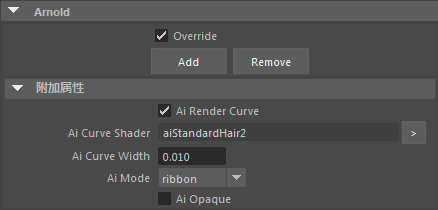
Arnold 集属性
有关如何将曲线渲染为羽毛的教程到此结束。使用覆盖集将曲线渲染为头发是一种创建复杂外观场景的实用方法，而且可以避免处理大量几何体产生的系统开销。
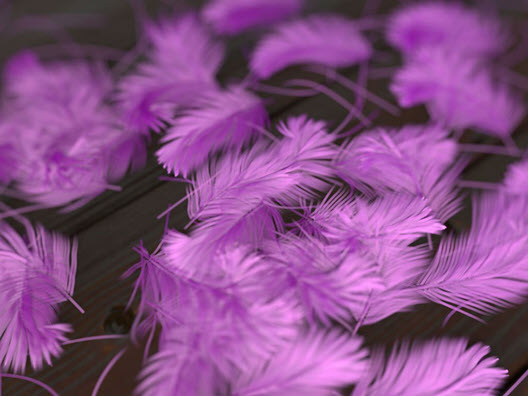